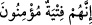

20. “Çünkü onlar eğer size muttali olurlarsa, ya sizi taşlayarak öldürürler veya
kendi dinlerine çevirirler ki, o zaman ebediyyen iflah olmazsınız.”
Onlara nâzik davranma ve varlığımızı sezdirmeme konusunda mübâlağa etsin. “Çünkü
onlar eğer size muttali olurlarsa,” sizin varlığınızdan haberdar olur da sizi ele
geçirirlerse “ya sizi taşlayarak öldürürler” yâni siz bu sâbit olduğunuz din üzere
bulunmakta ısrar ederseniz, mutlaka sizi taşlayarak öldürürler. Bu ise öldürülmenin en
kötü şeklidir. Taşlayarak öldürmek o toplumun âdetlerindendi.
“Veya kendi dinlerine” kâfirliğe “çevirirler ki” ya da geri dönmenize sizi zorla o
dinlerine sokarlar. Ashâb-ı Kehf’in önceden onların dininden olduğu, sonradan Allah’a
îmân ettikleri söylenmiştir.
Fakir (Bursevî) der ki: Doğru olan budur. Çünkü onlar hakkında: “Onlar Rab’lerine
inanmış gençlerdi.” (el-Kehf, 8/13) buyrulmuştur. Eğer onlar, sonradan îmân etmiş
olmasalardı onlar için: “__WORD__ İnnehüm fityetün mü’minûn = Onlar mü’min
gençlerdi.” buyrulurdu.
Burada “fî” harf-i cerrinin “ilâ” ya tercih edilmesi, kâfirlikte sebâta delâlet etmesi
içindir. Bu ise onların en kerih gördükleri şeydir.
“O zaman ebediyyen iflâh olmazsınız.” Zorla olsa bile onların dînine girerseniz; ne
dünyada ne de âhirette asla bir hayra eremezsiniz. Çünkü siz her ne kadar küfre
zorlanmış da olsanız; şeytanın sizi, küfrü hakîkaten kabule ve onda devama tedrîcen
yöneltmesi muhtemeldir.
et-Te’vîlâtü’n-Necmiyye’de şöyle der: “Çok şaşılacak bir şeydir ki Ashâb-ı Kehf 309
sene kendilerinden geçip Hakk’ın yanında olmak makamında kaldıkları sürece nâil
oldukları rûhânî gıdâlarla dünya yiyeceklerine, cismânî gıdâlara muhtaç olmadılar.
Nitekim Nebî (a.s.)’ın hâli de böyleydi. O, günlerce orucu birbirine ekler (visâl orucu
tutar) ve: “Rabb’imin katında gecelerim, O beni yedirir, içirir.”[164] derdi. Onlar
Hakk’ın yanında olmak makamından kendilerinde olmak durumuna dönünce, hemen
aralarında azık meselesini konuşmaya başladılar.
Onların yiyeceklerin en temiz olanını taleb etmeleri şuna işarettir: Vuslat erbabı ve
müşâhede ashabı, bu cemâl ve güzelliğe şâhid olup vuslatın tadına varınca, ünsiyetin ve
Sevgili’nin iltifatlarının tadını hissederler. Nefisler âlemine döndükleri vakit kalbleri
ve ruhları, rûhânî gıdaları arzu ederler. Hep güzel şeyleri müşâhede etmek isterler.
Çünkü her güzellik, Allah’ın cemâlindendir. Her letâfet Allah’ın güzelliğindendir. İşte
onlar güzel yiyeceklerle bu güzelliklere ulaşırlar. Bu yüzden Ashâb-ı Kehf kendi
aralarında şöyle dediler: “Hangi yiyeceği daha temiz ise size ondan erzak getirsin;
ayrıca, nâzik davransın (gizli hareket etsin) ve sakın sizi kimseye sezdirmesin.”
Yemek arama husûsunda gâyet mülâyim davransın.
Burada gaflet ehlinin muhabbet ehlinin hâllerini sezmelerinden sakınmak gerektiğine
işaret vardır. Çünkü muhabbet ehlinin nihâyet makamında öyle halleri vardır ki bunlar
henüz daha işin başında olanlara (bidâyet ehline) göre küfür gibidir. Nitekim Ebû